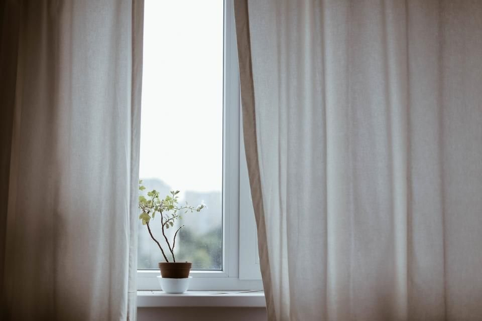
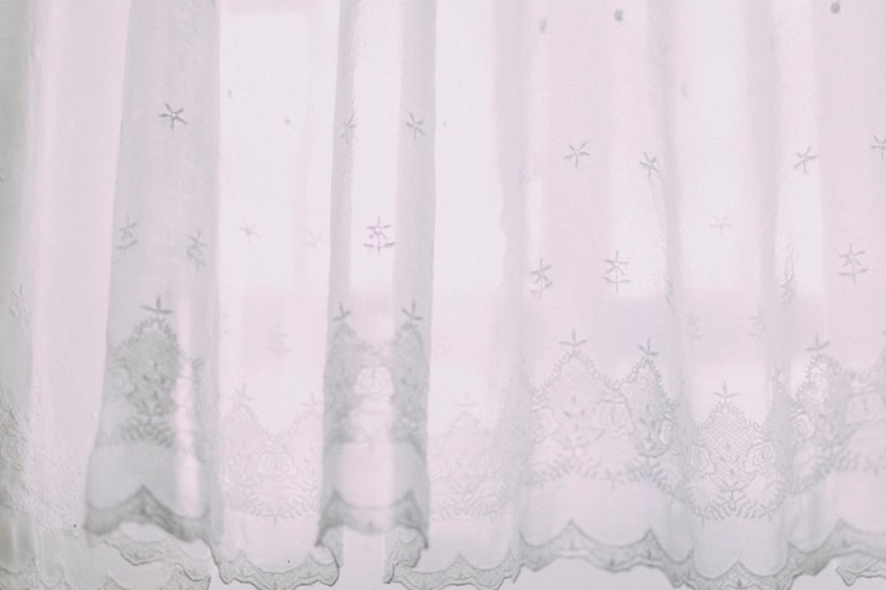

Salon
Gündüz tül, akşam fon. Geniş pencerede ray ya da korniş pencereden biraz taşacak kadar uzun olursa perde açıkken cam daha az kapanır, oda daha aydınlık kalır.

Atalar, Kartal · Perde mağazası
Emre Perde, Kartal Atalar'da Üsküdar Caddesi üzerinde. Kumaşları mağazada elinizle görün, pencerelerinizin ölçüsünü yazın; teklifinizi WhatsApp'tan isteyin.
Telefonla: 0554 494 03 88
Perde seçmek biraz da ışığı seçmektir. Aşağıdaki şerit tülden zebraya doğru koyulaşıyor; birinin üzerine gelin ya da dokunun, o türün nasıl çalıştığını Perdeler sayfasında küçük bir pencerede kendiniz deneyin.
Perdeyi taşıyan korniş ve ray da işin parçası: korniş, ray ve mekanizma çeşitlerine bakın
Her oda ışığı başka türlü kullanır. Aşağıdakiler perde seçerken işe yarayan genel önerilerdir; kendi pencerenizi mağazada birlikte değerlendirebiliriz.
Gündüz tül, akşam fon. Geniş pencerede ray ya da korniş pencereden biraz taşacak kadar uzun olursa perde açıkken cam daha az kapanır, oda daha aydınlık kalır.
Sabah ışığına karşı kalın bir katman. Tülün önüne fon ya da karartma özellikli bir kumaş eklemek, erken saatlerde odanın karanlık kalmasına yardım eder.
Gündüz uykusu için karartma, güvenlik için kısa ip. Stor ve zebra zincirlerinin ya da iplerinin çocuğun ulaşamayacağı yükseklikte toplanması önerilir.
Kısa ve kolay silinen. Ocağa yakın pencerede uzun, uçuşan kumaş yerine stor ya da zebra gibi pencere boyunda kalan modeller daha pratiktir.
Ekrana vuran güneşe kademeli ayar. Zebra ya da stor ile ışığı tamamen kesmeden yansımayı azaltabilir, gün içinde yüksekliği değiştirebilirsiniz.
Kolay toplanan, kola takılmayan. Sık açılan kapıda kenara rahat toplanan bir perde ya da doğrudan kapı kanadına takılan stor düşünülebilir.
Tül ve fon perdede kumaş seçimi ve dikim, stor ve zebrada ölçüye göre hazırlık, korniş ve rayda montaj ve değişim. Hepsi aynı sırayla ilerler:
Ölçüyü kendiniz alıp formdan gönderin ya da adresinizde ölçü alınması için randevu isteyin; bu, bölgenize göre planlanır.
Mağazada kumaşın dokusuna, rengine ve ışığı nasıl geçirdiğine bakın. Gelemiyorsanız WhatsApp'tan fotoğraf isteyin.
Tül ve fon seçtiğiniz pile sıklığıyla dikilir, stor ve zebra ölçünüze göre hazırlanır. Ne zaman hazır olacağını sipariş verirken sorun.
Korniş ya da ray takılır, perde asılır ve ayarlanır. Montaj isteğinizi mesajınızda belirtmeniz yeterli.

Temsili görsel Temsili görsel
Temsili görsel
Bir tülün dokusu, işlemesi ve ışığı nasıl süzdüğü ekranda tam anlaşılmaz. Mağazaya uğradığınızda kumaşı pencere ışığına tutup bakabilir, odanızdaki renklerle yan yana düşünebilirsiniz.
Eni ve boyu santim olarak yazın, perde tipini seçin. Ölçü sayfasında birden fazla pencere ekleyebilir, yaklaşık kumaş hesabını görebilir ve hazır mesajı WhatsApp'tan gönderebilirsiniz.
Nereden ölçeceğinizi bilmiyorsanız adım adım ölçü rehberi sizi bekliyor.
Pazartesi–Cumartesi 08:00–19:30
Google'da 5,0 puan, 333 değerlendirme. Yeni kumaşlar ve uygulamalar için Instagram: @eemreperdee
| Pazartesi | 08:00–19:30 |
|---|---|
| Salı | 08:00–19:30 |
| Çarşamba | 08:00–19:30 |
| Perşembe | 08:00–19:30 |
| Cuma | 08:00–19:30 |
| Cumartesi | 08:00–19:30 |
| Pazar | Kapalı |